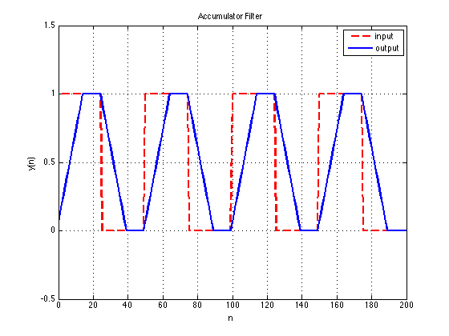
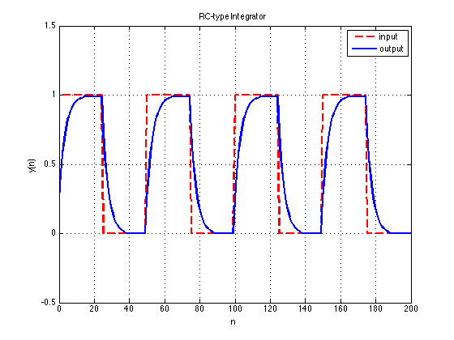
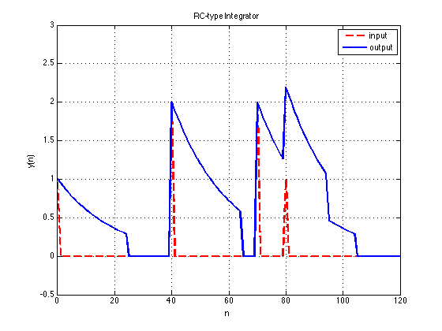
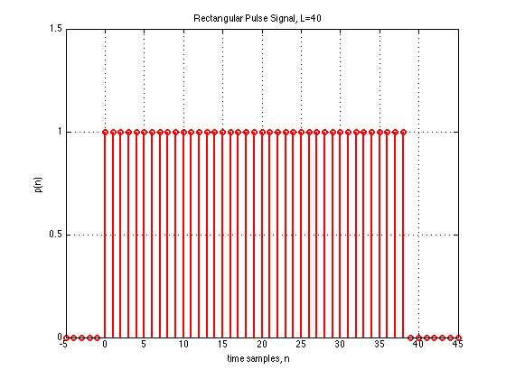
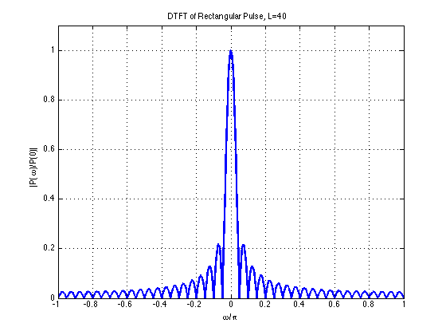
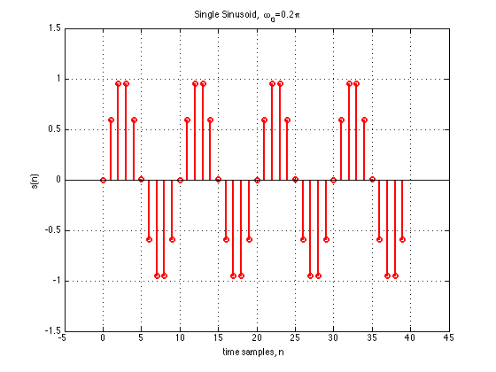
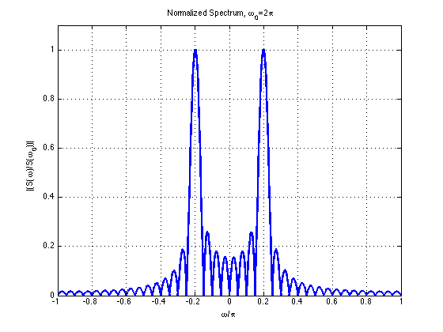
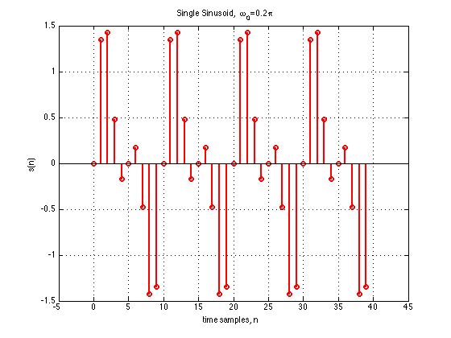
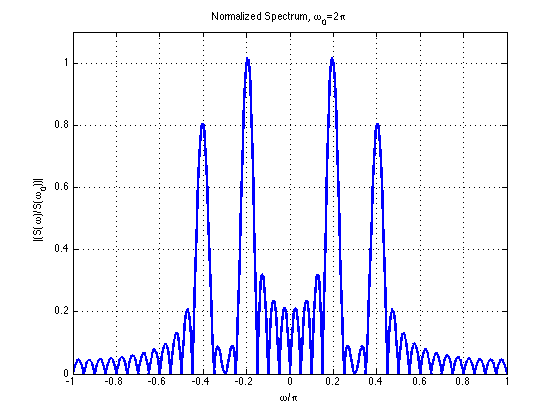

Part1
Contents
1(a)
clf
L=200;
K=50;
n = 0:L-1;
x = double(rem(n,K) < K/2);
h = [1/15*ones(1,15)];
y = conv(h,x);
a = 0:(length(y)-1);
plot(n,x,'red--',a,y,'LineWidth',2)
title('Accumulator Filter');
xlabel('n');
ylabel('y(n)');
legend('input','output');
axis([0 200 -0.5 1.5]);
grid on

1(b)
clf
L=200;
K=50;
n = 0:L-1;
x = double(rem(n,K) < K/2);
h=[];
for m=0:14
h(m+1) = 0.25*(0.75).^m;
end
y = conv(h,x);
a = 0:(length(y)-1);
plot(n,x,'red--',a,y,'LineWidth',2)
title('RC-type Integrator');
xlabel('n');
ylabel('y(n)');
legend('input','output');
axis([0 200 -0.5 1.5]);
grid on

1(c)
clf
n = 0:120;
d = @(n) double(n==0);
x = d(n)+2*d(n-40)+2*d(n-70)+d(n-80);
h=[];
for m=0:24
h(m+1) = (0.95).^m;
end
y = conv(h,x);
b = 0:(length(y)-1);
plot(n,x,'red--',b,y,'LineWidth',2)
title('RC-type Integrator');
xlabel('n');
ylabel('y(n)');
legend('input','output');
axis([0 120 -0.5 3]);
grid on

Part 2
(a)
id = 160009862;
n = 0:10;
d = @(n) double(n==0);
h = syst(d(n),id)
x1 = d(n-2);
y1 = syst(x1,id)
x2 = 3*d(n)+2*d(n-2);
y2 = syst(x2,id)
x3 = [1,1,1,1,1,1,1,1,1,1];
y3a = syst(x3,id)
y3b = conv(x3,h)
x4 = [1,-1,1,-1,1,-1,1,-1,1,-1];
y4a = syst(x4,id)
y4b = conv(x4,h)
h =
Columns 1 through 13
1 2 1 2 1 2 0 0 0 0 0 0 0
Columns 14 through 16
0 0 0
y1 =
Columns 1 through 13
0 0 1 2 1 2 1 2 0 0 0 0 0
Columns 14 through 16
0 0 0
y2 =
Columns 1 through 13
3 6 5 10 5 10 2 4 0 0 0 0 0
Columns 14 through 16
0 0 0
y3a =
Columns 1 through 13
1 3 4 6 7 9 9 9 9 9 8 6 5
Columns 14 through 15
3 2
y3b =
Columns 1 through 13
1 3 4 6 7 9 9 9 9 9 8 6 5
Columns 14 through 25
3 2 0 0 0 0 0 0 0 0 0 0
y4a =
Columns 1 through 13
1 1 0 2 -1 3 -3 3 -3 3 -4 2 -3
Columns 14 through 15
1 -2
y4b =
Columns 1 through 13
1 1 0 2 -1 3 -3 3 -3 3 -4 2 -3
Columns 14 through 25
1 -2 0 0 0 0 0 0 0 0 0 0
Part 3
3(a)
clf
L = 40;
n = [-5:1:45];
p = @(n) double(n>=0 & n<L-1);
stem(n,p(n),'red','LineWidth',2)
xlabel('time samples, n');
ylabel('p(n)');
title('Rectangular Pulse Signal, L=40');
axis([-5 45 0 1.5]);
grid on
w0 = 0;
w = linspace(-1,1,1001);
Pw = @(w) L*exp((w.*pi).*(-j).*((L-1)/2)).*sinc(((w.*pi).*L)./(2*pi))./(sinc((w.*pi)./(2*pi)));
Fm = abs(Pw(w)/Pw(w0));
figure
plot(w, Fm,'blue','LineWidth',2)
xlabel('\omega/\pi');
ylabel('|P(\omega)/P(0)|');
title('DTFT of Rectangular Pulse, L=40');
axis([-1 1 0 1.1]);
grid on
X = freqz(p(n),1,w*pi);
delta = mean(abs(X)-abs(Pw(w)));
fprintf('The difference between freqz function and theory function: %f \n',delta)
The difference between freqz function and theory function: -0.007007
 
3(b)
clf
L = 40;
w0 = 0.2*pi;
n = 0:L-1;
s = @(n) sin(w0*n);
stem(n,s(n),'red','LineWidth',2)
xlabel('time samples, n');
ylabel('s(n)')
title('Single Sinusoid, \omega_0=0.2\pi');
axis([-5,45,-1.5,1.5]);
grid on
w0 = 0.2;
w = linspace(-1,1,1001);
Pw1 = @(w) L*exp(((w-w0).*pi).*(-j).*((L-1)/2)).*sinc((((w-w0).*pi).*L)./(2*pi))./(sinc(((w-w0).*pi)./(2*pi)));
Pw2 = @(w) L*exp(((w+w0).*pi).*(-j).*((L-1)/2)).*sinc((((w+w0).*pi).*L)./(2*pi))./(sinc(((w+w0).*pi)./(2*pi)));
S = @(w)(1/2j)*(Pw1(w)-Pw2(w));
Fm = abs(S(w)/S(w0));
figure
plot(w,Fm,'LineWidth',2)
xlabel('\omega/\pi')
ylabel('|(S(\omega)/S(\omega_0))|')
title('Normalized Spectrum,\omega_0=2\pi')
axis([-1 1 0 1.1]);
grid on
X = freqz(s(n),1,w*pi);
delta = mean(abs(X)-abs(S(w)));
fprintf('The difference between freqz function and theory function: %f \n',delta)
fw = @(w) -abs(S(w));
y0 = fminbnd(fw,0.15,0.25);
fprintf('The actual spectral peak %f pi\n',y0);
The difference between freqz function and theory function: -0.000000
The actual spectral peak 0.198348 pi
 
3(c)
clf
L = 40;
w1 = 0.2*pi;
w2 = 0.4*pi;
n = 0:L-1;
s1 = @(n) sin(w1*n);
s2 = @(n) sin(w2*n);
s = s1(n)+0.8*s2(n);
stem(n,s,'red','LineWidth',2)
xlabel('time samples, n');
ylabel('s(n)')
title('Single Sinusoid, \omega_0=0.2\pi');
axis([-5,45,-1.5,1.5]);
grid on
w1 = 0.2;
w2 = 0.4;
w = linspace(-1,1,1001);
P1w1 = @(w) L*exp(((w-w1).*pi).*(-j).*((L-1)/2)).*sinc((((w-w1).*pi).*L)./(2*pi))./(sinc(((w-w1).*pi)./(2*pi)));
P1w2 = @(w) L*exp(((w+w1).*pi).*(-j).*((L-1)/2)).*sinc((((w+w1).*pi).*L)./(2*pi))./(sinc(((w+w1).*pi)./(2*pi)));
S1 = @(w)(1/2j)*(P1w1(w)-P1w2(w));
P2w1 = @(w) L*exp(((w-w2).*pi).*(-j).*((L-1)/2)).*sinc((((w-w2).*pi).*L)./(2*pi))./(sinc(((w-w2).*pi)./(2*pi)));
P2w2 = @(w) L*exp(((w+w2).*pi).*(-j).*((L-1)/2)).*sinc((((w+w2).*pi).*L)./(2*pi))./(sinc(((w+w2).*pi)./(2*pi)));
S2 = @(w)(1/2j)*(P2w1(w)-P2w2(w));
S = @(w)(S1(w)+0.8*S2(w));
Fm = abs(S(w)/S(w1));
figure
plot(w,Fm,'LineWidth',2)
xlabel('\omega/\pi')
ylabel('|(S(\omega)/S(\omega_0))|')
title('Normalized Spectrum,\omega_0=2\pi')
axis([-1 1 0 1.1]);
grid on
X = freqz(s,1,w*pi);
delta = mean(abs(X)-abs(S(w)));
fprintf('The difference between freqz function and theory function: %f \n',delta)
fw = @(w) -abs(S(w));
y1 = fminbnd(fw,0.15,0.25);
fprintf('The actual spectral peak near %s %f pi\n',' \omega1 ',y1);
y2 = fminbnd(fw,0.35,0.45);
fprintf('The actual spectral peak near %s %f pi\n',' \omega2 ',y2);
The difference between freqz function and theory function: 0.000000
The actual spectral peak near \omega1 0.195011 pi
The actual spectral peak near \omega2 0.402957 pi
 